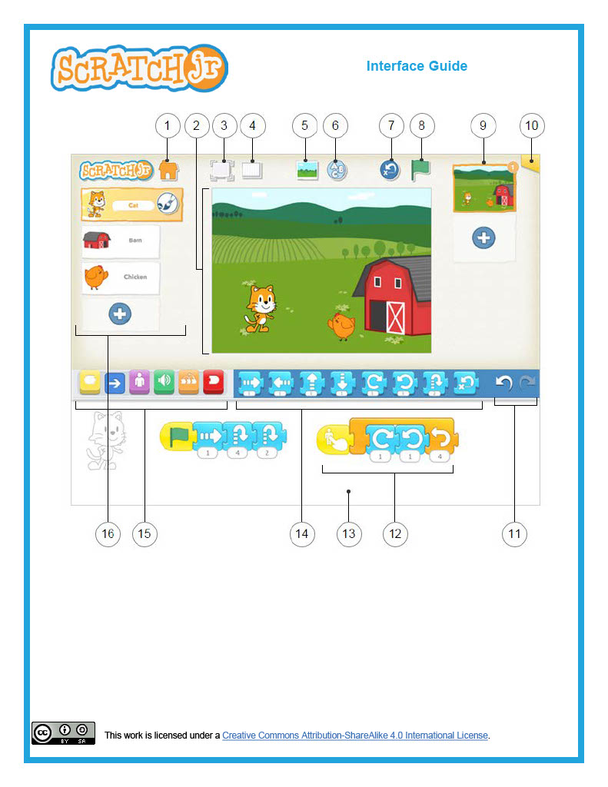
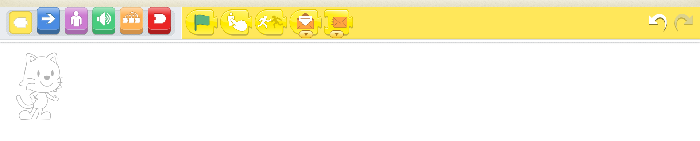

Durant cette étape, il s'agira de familiariser les élèves avec l'interface de Scratch Junior. Après avoir accédé à l'application via les supports disponibles (tablettes ou ordinateurs ), projeter l'image interface_aide. Demander ensuite aux élèves de deviner à quoi correspondent les différents zones indexées sur l'image. Prendre le temps de les laisser réfléchir et essayer de savoir à quoi correspondent les différentes zones. Puis leur donner la bonne réponse au fur et à mesure de la progression. Dans une seconde partie de l'étape, accéder à Scratch Jr avec un ordinateur, projeter l'interface de l'application, puis demander aux élèves d'indiquer à nouveau à quoi correspondent les différentes zones pour voir qu'ils ont bien assimilé les informations distillées plus tôt.
Illustration
Illustration

Il s'agira durant cette étape de d'abord définir ce qu'est un lutin (personnage) : contrairement à un personnage qui renvoie à une figure humaine ou animale, un lutin peut correspondre à un objet comme une maison ou un stylo qu'on anime grâce à une programmation. - Les différentes options de modification : Pour modifier l'apparence d'un lutin, cliquer sur le pinceau situé sur l'icone du lutin, en haut à gauche de l'écran . En haut à gauche de l'écran, vous avez différentes options de traits qu'on peut utiliser pour dessiner dans l'ordre suivant : On peut faire des traits en zigzag, des formes rondes ou circulaires, des carrés ainsi que des triangles. Tout en bas de l'écran, on a une palette de couleurs. Il suffit de cliquer sur la couleur choisie, puis ensuite de cliquer sur la partie du lutin qu'on veut colorier. Tout en haut de l'écran, on peut modifier le nom du lutin. Une fois les modifications terminées, on appuie sur le la lettre V située en haut à droite de l'écran.
Dans cette étape, nous allons voir comment supprimer un lutin (personnage). Pour ce faire, vous avez deux options : on peut faire un appui long sur l'icone du lutin jusqu'à ce qu'une croix rouge apparaisse, il suffit ensuite de cliquer sur la croix rouge pour faire disparaître le lutin. La deuxième option consiste à faire un appui long sur l'icone du lutin située sur la gauche de l'écran. On appuie ensuite sur la croix en rouge pour le supprimer.
Nous allons maintenant expliquer comment ajouter un nouveau lutin. Sur la gauche de l'cran, appuyez sur le signe + en bleu. Ici on peut choisir entre une trentaine de lutins différents. Pour dessiner un lutin de A à Z, appuyez sur le pinceau situé en haut à droite de l'écran. Les différentes options de modification serviront également à dessiner un lutin..
Durant cette phase, on va passer à la découverte des blocs. Expliquer que chaque type de bloc correspond à une couleur différente. Les blocs jaunes sont des déclencheurs d’événement. Les blocs bleus sont des blocs de déplacement. Les blocs violets servent à modifier l'apparence du personnage. Les blocs verts permettent de programmer tout ce qui est relatif au son. Les blocs oranges sont des blocs de contrôle. Et les blocs rouges permettent de mettre fin à la programmation, d'effectuer une répétition indéfinie ou de passer d'une scène à l'autre. Expliquer ensuite que l'espace blanc situé après l'icone du char correspond à l'espace de programmation : on y glisse les blocs pour que le personnage puisse exécuter les instructions données. L'icone qui apparaît sur la gauche de l'écran correspond au lutin pour qui la programmation est effectuée.
Illustration
